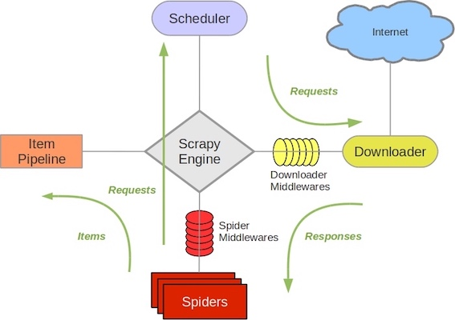

Python3网络爬虫开发实战 - Scrapy框架的使用¶
Scrapy框架介绍¶
Scrapy是一个基于Twisted的异步处理框架，是纯Python实现的爬虫框架，其架构清晰，模块之间的耦合程度低，可扩展性极强，可以灵活完成各种需求。

- Engine。 引擎，处理整个系统的数据流处理、触发事务，是整个框架的核心。
- Item。 项目，它定义了爬取结果的数据结构，爬取的数据会被赋值成该Item对象。
- Scheduler。调度器，接受引擎发过来的请求并将其加入队列中，在引擎再次请求的时候将请求提供给引擎。
- Downloader。下载器，下载网页内容，并将网页内容返回给蜘蛛。
- Spiders。 蜘蛛，其内定义了爬取的逻辑和网页的解析规则，结果和新的请求。
- Item Pipeline。 项目管道, 负责处理由蜘蛛从网页中抽取的项目，它主要负责解析响应并生成提取. 它的主要任务是清洗 、验证和存储数据。
- Downloader Middlewares。 下载器中间件, 位于引擎和下载器之间的组件，主要处理引擎与下载器之间的请求及响应。
- Spider Middlewares。 蜘蛛中间件，位于引擎和蜘蛛之间的组件，主要处理蜘蛛输入的响应和输出的结果及新的请求。
Scrapy中的数据流由引擎控制，数据流的过程如下。
- Engine 首先打开一个网站， 找到处理该网站的 Spider ，并向该 Spider 请求第一个要爬取的 URL。
- Engine从Spider中获取到第一个要爬取的URL，并通过Scheduler以
Request 的形式调度 。 - Engine向Scheduler请求下一个要爬取的URL。
- Scheduler返回下一个要爬取的URL给Engine, Engine将URL通过Downloader Middlewares转发给 Downloader下载。
- 一旦页面下载完毕， Downloader生成该页面的
Response ， 并将其通过Downloader Middlewares发送给Engine。 - Engine从下载器中接收到
Response ， 并将其通过Spider Middlewares发送给Spider处理。 - Spider处理 Response，并返回爬取到的Item及新的
Request 给Engine。 - Engine将Spider返回的Item给ItemPipeline，将新的Request给Scheduler。
- 重复第（2）步到第（8 ）步， 直到Scheduler中没有更多的
Request , Engine关闭该网站， 爬取结束。
Scrapy入门¶
创建一个Scrapy项目，项目文件可以直接用scrapy命令生成
scrapy startproject projectname
创建之后，项目文件结构如下所示 ：
scrapy.cfg
project/
__init__. py
items.py
pipelines.py
settings.py
middlewares.py
spiders/
init.py
Spider是自己定义的类， scrapy用它来从网页里抓取内容， 并解析抓取的结果。 不过这个类必须继承scrapy提供的Spider类
也可以使用命令行创建一个Spider。 比如要生成Quotes这个Spider，可以执行如下命令：
cd projectname scrapy genspider quotes quotes.toscrape.com
genspider命令的第一个参数是Spider的名称， 第二个参数是网站域名。执行完毕之后，spiders文件夹中多了一个quotes.py，它就是刚刚创建的Spider, 内容如下所示：
class QuotesdemoSpider(scrapy.Spider): name = 'quotesdemo' allowed_domains = ['quotes.toscrape.com'] start_urls = ['http://quotes.toscrape.com/'] def parse(self, response): pass
这里有三个属性 --
name , 它是每个项目唯一的名字， 用来区分不同的Spider。allowed_domains , 它是允许爬取的域名，如果初始或后续的请求链接不是这个域名下的，则请求链接会被过滤掉。start_urls ，它包含了Spider在启动时爬取的url列表，初始请求是由它来定义的 。parse ，它是Spider 的一个方法。 默认情况下，被调用时start_urls 里面的链接构成的请求完成下载执行后， 返回的响应就会作为唯一的参数传递给这个函数。 该方法负责解析返回的响应、提取数据或者进一步生成要处理的请求。
Scrapy对接Selenium¶
Scrapy抓取页面的方式和requests库类似，都是直接模拟HTTP请求，所以Scrapy也不能抓取JavaScript动态渲染的页面。直接用Selenium模拟浏览器进行抓取，可见即可爬。
本节以抓取淘宝商品信息为例子，演示Scrapy框架如何对接Selenium。首先新建项目和Spider，修改settings.py中的ROBOTSTEXT_OBEY=False。
scrapy startproject scrapyseleniumtest scrapy genspider taobao www.taobao.com
然后定义Item对象，名为
class ProductItem(scrapy.Item): # define the fields for your item here like: # name = scrapy.Field() collection = 'products' image = scrapy.Field() price = scrapy.Field() deal = scrapy.Field() titlte = scrapy.Field() shop = scrapy.Field() location = scrapy.Field()
这里我们定义了6个
初步实现Spider的
class TaobaoSpider(scrapy.Spider): name = 'taobao' allowed_domains = ['taobao.com'] base_url = ['https://s.taobao.com/search?q='] def start_requests(self): for keyword in self.settings.get("KEYWORDS"): for page in range(1, self.settings.get("MAX_PAGE") + 1): url = self.base_url + quote(keyword) yield scrapy.Request(url=url, callback=self.parse, meta={'page': page}, dont_filter=True)
首先定义了商品列表的URL-settings.py里面，
KEYWORDS = ['iPad'] MAX_PAGE = 100
接下来我们需要处理这些请求的抓取：对接Selenium进行抓取，采用Downloader Middleware来实现。在Middleware里面的
Python